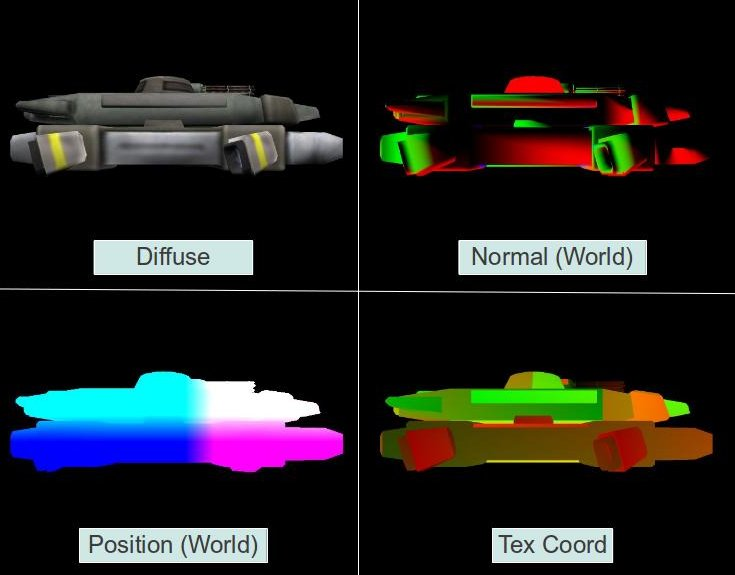

Background
The way we've been doing lighting since tutorial 17 is known as Forward Rendering (or Shading). This is a straightforward approach where we do a set of transformations on the vertices of every object in the VS (mostly translations of the normal and position to clip space) followed by a lighting calculation per pixel in the FS. Since each pixel of every object gets only a single FS invocation we have to provide the FS with information on all light sources and take all of them into account when calculating the light effect per pixel. This is a simple approach but it has its downsides. If the scene is highly complex (as is the case in most modern games) with many objects and a large depth complexity (same screen pixel covered by several objects) we get a lot of wasted GPU cycles. For example, if the depth complexity is 4 it means that the lighting calculations are executed on 3 pixels for nothing because only the topmost pixel counts. We can try to counter that by sorting the objects front to back but that doesn't always work well with complex objects.
Another problem with forward rendering is when there are many light sources. In that case the light sources tend to be rather small with a limited area of effect (else it will overwhelm the scene). But our FS calculates the effect of every light source, even if it is far away from the pixel. You can try to calculate the distance from the pixel to the light source but that just adds more overhead and branches into the FS. Forward rendering simply doesn't scale well with many light sources. Just image the amount of computation the FS needs to do when there are hundreds of light sources...
Deferred shading is a popular technique in many games which targets the specific problem above. The key point behind deferred shading is the decoupling of the geometry calculations (position and normal transformations) and the lighting calculations. Instead of taking each object "all the way", from the vertex buffer into its final resting place in the framebuffer we seperate the processing into two major passes. In the first pass we run the usual VS but instead of sending the processed attributes into the FS for lighting calculations we forward them into what is known as the G Buffer. This is a logical grouping of several 2D textures and we have a texture per vertex attribute. We seperate the attributes and write them into the different textures all at once using a capability of OpenGL called Multiple Render Targets (MRT). Since we are writing the attributes in the FS the values that end up in the G buffer are the result of the interpolation performed by the rasterizer on the vertex attributes. This stage is called the Geometry Pass. Every object is processed in this pass. Because of the depth test, when the geometry pass is complete the textures in the G buffer are populated by the interpolated attributes of the closest pixels to the camera. This means that all the "irrelevant" pixels that have failed the depth test have been dropped and what is left in the G buffer are only the pixels for which lighting must be calculated. Here's a typical example of a G buffer of a single frame:
In the second pass (known as the Lighting Pass) we go over the G buffer pixel by pixel, sample all the pixel attributes from the different textures and do the lighting calculations in pretty much the same way that we are used to. Since all the pixels except the closest ones were already dropped when we created the G buffer we do the lighting calculations only once per pixel.
How do we traverse the G buffer pixel by pixel? The simplest method is to render a screen space quad. But there is a better way. We said earlier that since the light sources are weak with a limited area of influence we expect many pixels to be irrelevant to them. When the influence of a light source on a pixel is small enough it is better to simply ignore it for peformance reasons. In forward rendering there was no efficient way to do that but in deferred shading we can calculate the dimentions of a sphere around the light source (for points lights; for spot lights we use a cone). That sphere represents the area of influence of the light and outside of it we want to ignore this light source. We can use a very rough model of a sphere with a small number of polygons and simply render it with the light source at the center. The VS will do nothing except translate the position into clip space. The FS will be executed only on the relevant pixels and we will do our lighting calculations there. Some people go even further by calculating a minimal bounding quad that covers that sphere from the point of view of the light. Rendering this quad is even lighter because there's only two triangles. These methods are useful to limit the number of pixels for which the FS is executed to only the ones we are really interested in.
We will cover deferred shading in three steps (and three tutorials):
- In this tutorial we will populate the G buffer using MRT. We will dump the contents of the G buffer to the screen to make sure we got it correctly.
- In the next tutorial we will add the light pass and get lighting working in true deferred shading fashion.
- Finally, we will learn how to use the stencil buffer to prevent small points lights from lighting objects that are further off (a problem which will become evident by the end of the second tutorial).
Source walkthru
(gbuffer.h:28)
class GBuffer
{
public:
enum GBUFFER_TEXTURE_TYPE {
GBUFFER_TEXTURE_TYPE_POSITION,
GBUFFER_TEXTURE_TYPE_DIFFUSE,
GBUFFER_TEXTURE_TYPE_NORMAL,
GBUFFER_TEXTURE_TYPE_TEXCOORD,
GBUFFER_NUM_TEXTURES
};
GBuffer();
~GBuffer();
bool Init(unsigned int WindowWidth, unsigned int WindowHeight);
void BindForWriting();
void BindForReading();
private:
GLuint m_fbo;
GLuint m_textures[GBUFFER_NUM_TEXTURES];
GLuint m_depthTexture;
};
The GBuffer class contains all the textures that the G buffer in deferred shading needs. We have textures for the vertex attributes as well as a texture to serve as our depth buffer. We need this depth buffer because we are going to wrap all the textures in an FBO so the default depth buffer will not be available. FBOs have already been covered in tutorial 23 so we will skip that here.
The GBuffer class also has two methods that will be repeatedly called at runtime - BindForWriting() binds the textures as a target during the geometry pass and BindForReading() binds the FBO as input so its contents can be dumped to the screen.
(gbuffer.cpp:48)
bool GBuffer::Init(unsigned int WindowWidth, unsigned int WindowHeight)
{
// Create the FBO
glGenFramebuffers(1, &m_fbo);
glBindFramebuffer(GL_DRAW_FRAMEBUFFER, m_fbo);
// Create the gbuffer textures
glGenTextures(ARRAY_SIZE_IN_ELEMENTS(m_textures), m_textures);
glGenTextures(1, &m_depthTexture);
for (unsigned int i = 0 ; i < ARRAY_SIZE_IN_ELEMENTS(m_textures) ; i++) {
glBindTexture(GL_TEXTURE_2D, m_textures[i]);
glTexImage2D(GL_TEXTURE_2D, 0, GL_RGB32F, WindowWidth, WindowHeight, 0, GL_RGB, GL_FLOAT, NULL);
glFramebufferTexture2D(GL_FRAMEBUFFER, GL_COLOR_ATTACHMENT0 + i, GL_TEXTURE_2D, m_textures[i], 0);
}
// depth
glBindTexture(GL_TEXTURE_2D, m_depthTexture);
glTexImage2D(GL_TEXTURE_2D, 0, GL_DEPTH_COMPONENT32F, WindowWidth, WindowHeight, 0, GL_DEPTH_COMPONENT, GL_FLOAT,
NULL);
glFramebufferTexture2D(GL_FRAMEBUFFER, GL_DEPTH_ATTACHMENT, GL_TEXTURE_2D, m_depthTexture, 0);
GLenum DrawBuffers[] = { GL_COLOR_ATTACHMENT0, GL_COLOR_ATTACHMENT1, GL_COLOR_ATTACHMENT2, GL_COLOR_ATTACHMENT3 };
glDrawBuffers(ARRAY_SIZE_IN_ELEMENTS(DrawBuffers), DrawBuffers);
GLenum Status = glCheckFramebufferStatus(GL_FRAMEBUFFER);
if (Status != GL_FRAMEBUFFER_COMPLETE) {
printf("FB error, status: 0x%x\n", Status);
return false;
}
// restore default FBO
glBindFramebuffer(GL_DRAW_FRAMEBUFFER, 0);
return true;
}
This is how we initialize the G buffer. We start by creating the FBO and textures for the vertex attributes and the depth buffer. The vertex attributes textures are then initialized in a loop that does the following:
- Creates the storage area of the texture (without initializing it).
- Attaches the texture to the FBO as a target.
Initialization of the depth texture is done explicitly because it requires a different format and is attached to the FBO at a different spot.
In order to do MRT we need to enable writing to all four textures. We do that by supplying an array of attachment locations to the glDrawBuffers() function. This array allows for some level of flexibility because if we put GL_COLOR_ATTACHMENT6 as its first index then when the FS writes to the first output variable it will go into the texture that is attached to GL_COLOR_ATTACHMENT6. We are not interested in this complexity in this tutorial so we simply line the attachments one after the other.
Finally, we check the FBO status to make sure everything was done correctly and restore the default FBO (so that further changes will not affect our G buffer). The G buffer is ready for use.
(tutorial35.cpp:105)
virtual void RenderSceneCB()
{
CalcFPS();
m_scale += 0.05f;
m_pGameCamera->OnRender();
DSGeometryPass();
DSLightPass();
RenderFPS();
glutSwapBuffers();
}
Let's now review the implementation top down. The function above is the main render function and it doesn't have a lot to do. It handles a few "global" stuff such as frame rate calculation and display, camera update, etc. Its main job is to execute the geometry pass followed by the light pass. As I mentioned earlier, in this tutorial we are just generating the G buffer so our "light pass" doesn't really do deferred shading. It just dumps the G buffer to the screen.
(tutorial35.cpp:122)
void DSGeometryPass()
{
m_DSGeomPassTech.Enable();
m_gbuffer.BindForWriting();
glClear(GL_COLOR_BUFFER_BIT | GL_DEPTH_BUFFER_BIT);
Pipeline p;
p.Scale(0.1f, 0.1f, 0.1f);
p.Rotate(0.0f, m_scale, 0.0f);
p.WorldPos(-0.8f, -1.0f, 12.0f);
p.SetCamera(m_pGameCamera->GetPos(), m_pGameCamera->GetTarget(), m_pGameCamera->GetUp());
p.SetPerspectiveProj(m_persProjInfo);
m_DSGeomPassTech.SetWVP(p.GetWVPTrans());
m_DSGeomPassTech.SetWorldMatrix(p.GetWorldTrans());
m_mesh.Render();
}
We start the geometry pass by enabling the proper technique and setting the GBuffer object for writing. After that we clear the G buffer (glClear() works on the current FBO which is our G buffer). Now that everything is ready we setup the transformations and render the mesh. In a real game we would probably render many meshes here one after the other. When we are done the G buffer will contain the attributes of the closest pixels which will enable us to do the light pass.
(tutorial35.cpp:141)
void DSLightPass()
{
glBindFramebuffer(GL_FRAMEBUFFER, 0);
glClear(GL_COLOR_BUFFER_BIT | GL_DEPTH_BUFFER_BIT);
m_gbuffer.BindForReading();
GLsizei HalfWidth = (GLsizei)(WINDOW_WIDTH / 2.0f);
GLsizei HalfHeight = (GLsizei)(WINDOW_HEIGHT / 2.0f);
m_gbuffer.SetReadBuffer(GBuffer::GBUFFER_TEXTURE_TYPE_POSITION);
glBlitFramebuffer(0, 0, WINDOW_WIDTH, WINDOW_HEIGHT,
0, 0, HalfWidth, HalfHeight, GL_COLOR_BUFFER_BIT, GL_LINEAR);
m_gbuffer.SetReadBuffer(GBuffer::GBUFFER_TEXTURE_TYPE_DIFFUSE);
glBlitFramebuffer(0, 0, WINDOW_WIDTH, WINDOW_HEIGHT,
0, HalfHeight, HalfWidth, WINDOW_HEIGHT, GL_COLOR_BUFFER_BIT, GL_LINEAR);
m_gbuffer.SetReadBuffer(GBuffer::GBUFFER_TEXTURE_TYPE_NORMAL);
glBlitFramebuffer(0, 0, WINDOW_WIDTH, WINDOW_HEIGHT,
HalfWidth, HalfHeight, WINDOW_WIDTH, WINDOW_HEIGHT, GL_COLOR_BUFFER_BIT, GL_LINEAR);
m_gbuffer.SetReadBuffer(GBuffer::GBUFFER_TEXTURE_TYPE_TEXCOORD);
glBlitFramebuffer(0, 0, WINDOW_WIDTH, WINDOW_HEIGHT,
HalfWidth, 0, WINDOW_WIDTH, HalfHeight, GL_COLOR_BUFFER_BIT, GL_LINEAR);
}
The light pass starts by restoring the default FBO (the screen) and clearing it. Next we bind the FBO of the G buffer for reading. We now want to copy from the G buffer textures into the screen. One way to do that is to write a simple program where the FS samples from a texture and outputs the result. If we draw a full screen quad with texture coordinates that go from [0,0] to [1,1] we would get the result that we want. But there is a better way. OpenGL provides means to copy from one FBO to another using a single call and without all the setup overhead than the other method incurs. The function glBlitFramebuffer() takes the source coordinates, destination coordinates and a couple of other variables and performs the copy operation. It requires the source FBO to be bound to the GL_READ_FRAMEBUFFER and the destination FBO to the GL_DRAW_FRAMEBUFFER (which we did at the start of the function). Since the FBO can have several textures attached to its various attachment locations we must also bind the specific texture to the GL_READ_BUFFER target (because we can only copy from a single texture at a time). This is hidden inside GBuffer::SetReadBuffer() which we will review in a bit. The first four parameters to glBlitframebuffer() defines the source rectangle - bottom X, bottom Y, top X, top Y. The next four parameters define the destination rectangle in the same way.
The ninth parameter says whether we want to read from the color, depth or stencil buffer and can take the values GL_COLOR_BUFFER_BIT, GL_DEPTH_BUFFER_BIT, or GL_STENCIL_BUFFER_BIT. The last parameter determines the way in which OpenGL will handle possible scaling (when the source and destination parameters are not of the same dimensions) and can be GL_NEAREST or GL_LINEAR (looks better than GL_NEAREST but requires more compute resources). GL_LINEAR is the only valid option in the case of GL_COLOR_BUFFER_BIT. In the example above we see how to scale down each source texture into one of the screen quadrants.
(geometry_pass.vs)
#version 330
layout (location = 0) in vec3 Position;
layout (location = 1) in vec2 TexCoord;
layout (location = 2) in vec3 Normal;
uniform mat4 gWVP;
uniform mat4 gWorld;
out vec2 TexCoord0;
out vec3 Normal0;
out vec3 WorldPos0;
void main()
{
gl_Position = gWVP * vec4(Position, 1.0);
TexCoord0 = TexCoord;
Normal0 = (gWorld * vec4(Normal, 0.0)).xyz;
WorldPos0 = (gWorld * vec4(Position, 1.0)).xyz;
}
This is the entire VS of the geometry pass. There is nothing new here. We simple perform the usual transformations and pass the results to the FS.
(geometry_pass.fs)
#version 330
in vec2 TexCoord0;
in vec3 Normal0;
in vec3 WorldPos0;
layout (location = 0) out vec3 WorldPosOut;
layout (location = 1) out vec3 DiffuseOut;
layout (location = 2) out vec3 NormalOut;
layout (location = 3) out vec3 TexCoordOut;
uniform sampler2D gColorMap;
void main()
{
WorldPosOut = WorldPos0;
DiffuseOut = texture(gColorMap, TexCoord0).xyz;
NormalOut = normalize(Normal0);
TexCoordOut = vec3(TexCoord0, 0.0);
}
The FS is responsible for doing MRT. Instead of outputting a single vector it outputs multiple vectors. Each of these vectors goes to a corresponding index in the array that was previously set by glDrawBuffers(). So in each FS invocation we are writing into the four textures of the G buffer.
(gbuffer.cpp:90)
void GBuffer::BindForWriting()
{
glBindFramebuffer(GL_DRAW_FRAMEBUFFER, m_fbo);
}
void GBuffer::BindForReading()
{
glBindFramebuffer(GL_READ_FRAMEBUFFER, m_fbo);
}
void GBuffer::SetReadBuffer(GBUFFER_TEXTURE_TYPE TextureType)
{
glReadBuffer(GL_COLOR_ATTACHMENT0 + TextureType);
}
The above three functions are used to change the state of the G buffer to fit the current pass by the main application code.